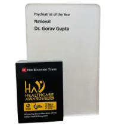

Best Psychiatrist in Delhi
Dr. Gorav Gupta Senior Psychiatrist in South Delhi

Dr. Gorav Gupta, a reputed Senior Consultant Psychiatrist in Delhi. He completed his MBBS from the prestigious medical college, Maulana Azad Medical College (Delhi University) and M.D. from Lady Hardinge Medical College (Delhi University) in the year 1997.
He is known for pioneering niche work in psychosocial rehabilitation in the field of psychiatry. As a recognition of developing infrastructure for mentally sick patients, he was appointed as President of Mental Research Society.
He runs a 100 beded mental health establishment known as Tulasi Psychiatry and Rehabilitation Centre, a 50 beded halfway home known as Tulasi Home for patients with chronic mental illness. The organization is successfully running for more than 28 years and is well known for treatment modules adopted to treat addiction. India’s first Neuromodulation lab was setup by Dr. Gorav Gupta in 2023. The Neuromodulation lab offers comprehensive treatments to enhance mental well-being. Cutting-edge treatments : Deep Transcranial Magnetic Stimulation (dTMS) therapy, Virtual Reality (VR)exposure therapy, Biofeedback therapy, Modified Electroconvulsive Therapy and Ketamine therapy for different psychiatric disorders like OCD, Depression, Stress, Anxiety, Phobias, and addiction disorders.
Achievements of Dr. Gorav Gupta top psychiatrist in Delhi
Dr. Gorav a senior psychiatrist in Delhi worked as an advisor to the Government of India in framing the rules and regulations for the Mental Health Care Act 2017. He is now also part of a committee making amendments to Act.
He is currently a member of the Central Mental Health Committee, which guides and contributes to the improvement of the country’s mental health. He is also working with the Department of Social Welfare of Delhi providing technical know-how in the establishment of halfway home by the government.
He is on the advisory boards of several pharmaceutical companies and is actively involved in the research and development of improved pharmaceuticals to treat mental illness. He is part of a committee advising on insurance reforms to include mental health as a part of cashless service to patrons.
Furthermore, he has written and spoken about mental health issues and current affairs in important print media such as Hindustan Times, Times of India, Navbharat Times, Indian Express, and others, as well as on television shows. He is a well-known speaker at many mental health and clinical psychology conferences.
Dr. Gupta professional experience and competence in psychiatric management include, but are not limited to:
- Psychiatric Outpatient and Inpatient treatment of mentally ill adults and adolescents, elderly men and women, homeless mentally ill, and rehabilitation of mentally ill patients.
- Pharmacological and Psychosocial management
- Geriatric Psychiatry
- De-addiction and rehabilitation.
- Community outreach services.
- Occupational Therapy
- Forensic Psychiatry
He holds eminent positions of responsibility and contributes actively in Professional Bodies
- President of Mental Research Society
- Life Fellow, Indian Psychiatric Society
- Life Member, Indian Medical Association
- Life Member of Indian Association of Private Psychiatry
- Life Member of Delhi Psychiatric Society
Treatment services by the reputed psychiatrist in Delhi
Schizophrenia
Schizophrenia is a complex mental disorder affecting millions worldwide. It encompasses a range of symptoms, from hallucinations and delusions to disorganized thinking and social withdrawal. Often misunderstood, it’s important to remember that individuals with schizophrenia can lead fulfilling lives with proper treatment and support. Early diagnosis of disease and a combination of therapy and medication can help manage symptoms and enhance quality of life. Empathy and understanding from society are essential in combating stigma and promoting inclusion for those living with schizophrenia. By offering support and education, we can contribute to a more compassionate and inclusive world for everyone affected by this condition.
Bipolar Disorder
Bipolar disorder, marked by extreme mood swings, is a challenging yet manageable condition. Individuals with bipolar disorder experience episodes of mania (elevated mood) and depression (low mood). While these shifts can be disruptive, treatment options, including mood stabilizers and therapy, can help individuals regain control over their lives. Understanding and support from loved ones are vital in managing bipolar disorder. With proper care, those affected can lead fulfilling lives and channel their unique creativity and energy. Let’s promote awareness and reduce stigma to foster a more compassionate society for those living with bipolar disorder.
Depression
Depression is a pervasive mental health condition affecting millions globally. It’s more than just feeling sad; it’s a persistent and often debilitating sense of hopelessness and emptiness. Depression can impact every aspect of life, from relationships to physical health. However, there’s hope. Effective treatments, such as therapy and medication, exist, allowing individuals to regain their joy and functionality. Compassion and understanding from friends and family are crucial. Let’s work together to break the stigma surrounding depression, encourage open conversations, and support those who are struggling. With the right help, recovery is possible, and brighter days can lie ahead.
Take a Step Towards Better Mental Health – Start Your Mental Health Assessment Today
Discover your mental well-being with our comprehensive Mental Health Assessment Tests. Get personalized insights to guide your journey toward a healthier mind.
Test your mental health wellbeingDeaddiction Treatment
Addiction treatment is a lifeline for people who are struggling with substance misuse or addictive behaviours. It offers a structured and supportive approach to help them break free from the cycle of addiction. These programs typically involve a combination of therapies, counseling, and medical interventions, tailored to individual needs. Deaddiction treatment addresses not only the physical aspects of dependency but also the psychological and emotional components, empowering individuals to rebuild their lives. It’s a journey of recovery, marked by resilience and hope, enabling people to rediscover their potential and regain control over their futures, free from the grips of addiction.
Eating Disorder
Eating disorders are mental health conditions characterized by unhealthy eating behaviors and distorted body image. They include anorexia nervosa, bulimia nervosa, and binge-eating disorder. These disorders can have devastating physical and emotional consequences, but with early intervention and support, recovery is possible. Treatment typically involves a combination of therapy, medical care, and nutritional guidance. Compassion, understanding, and non-judgmental support from friends and family play a vital role in the healing process. It’s essential to raise awareness, reduce stigma, and promote a culture of body positivity and self-acceptance to help those affected by eating disorders find a path to recovery and well-being.
Personality Disorder
Personality disorders are complex mental health conditions marked by enduring patterns of behavior, cognition, and inner experience that deviate from societal norms. These conditions, such as borderline, narcissistic, or antisocial personality disorders, often lead to difficulties in relationships and daily functioning. Treatment, including therapy and sometimes medication, can help individuals manage symptoms and improve their quality of life. It’s essential to recognize that those with personality disorders deserve understanding and support rather than judgment. Raising awareness and reducing stigma is crucial, as it encourages early intervention and fosters a more compassionate society where individuals with personality disorders can seek help and lead fulfilling lives.
News & Awards

Psychiatrist of the Year
Dr. Gorav Gupta has been awarded Psychiatrist of the year award by the Economic Times for National region.
Dr. Gorav Gupta OPD timings
- Delhi: Wednesday and Friday (2 PM- 6 PM)
- Online: Thursday (2 PM – 5 PM)
- Call +91-8800000255 for the appointment.